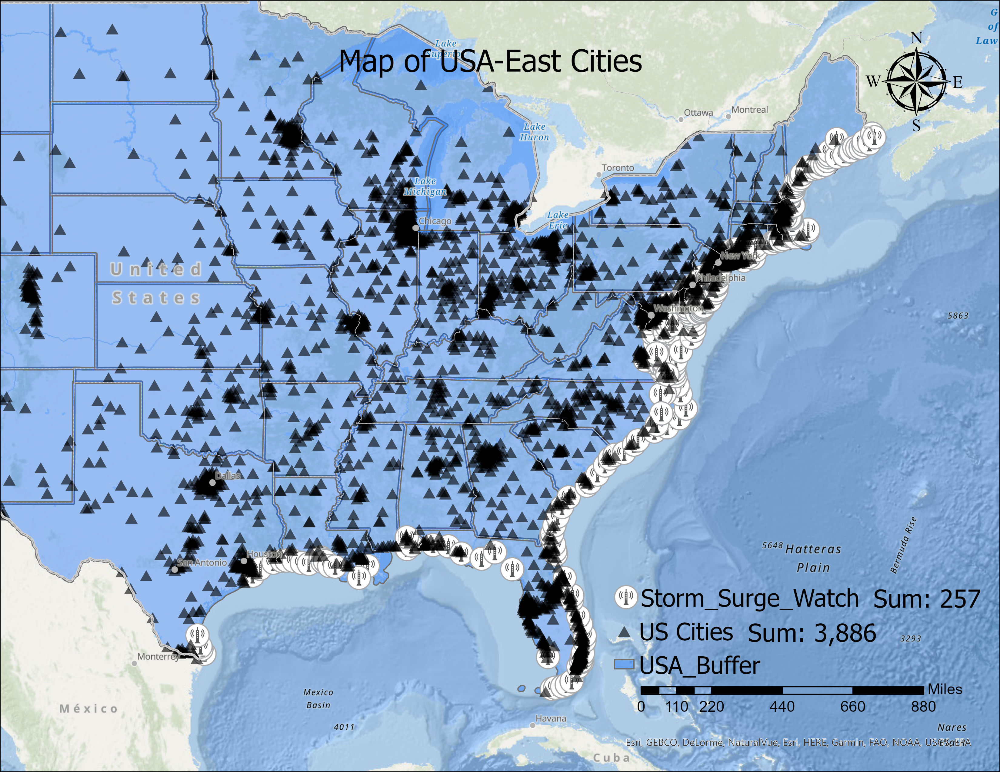
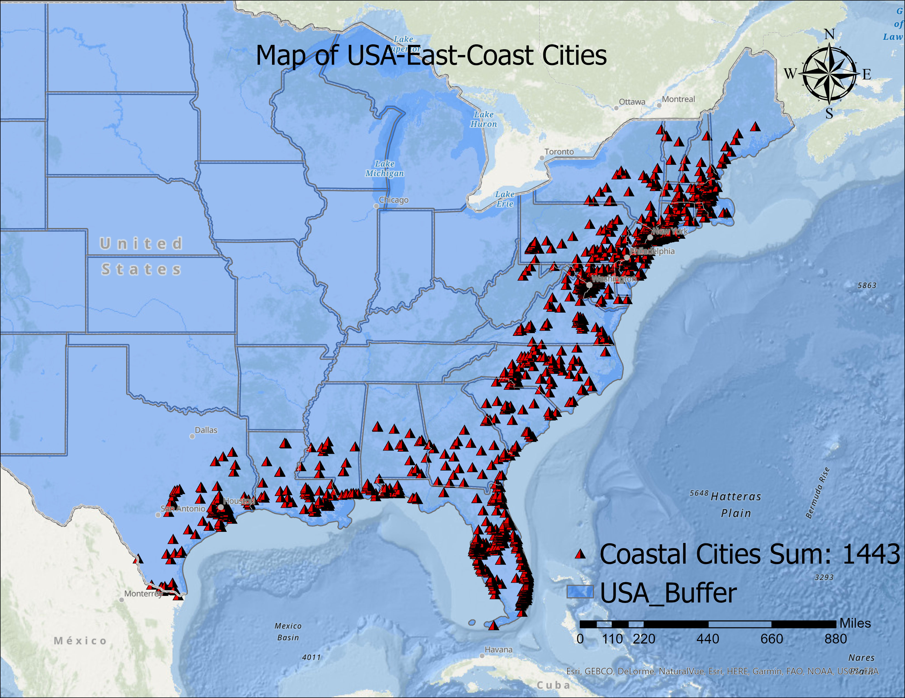
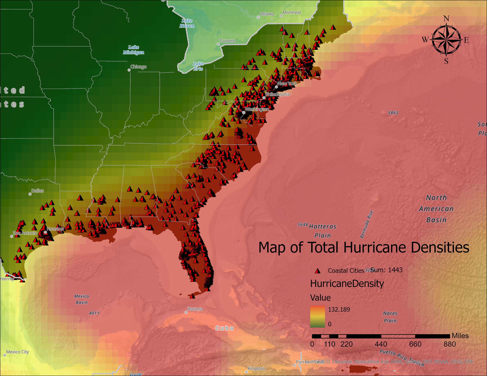
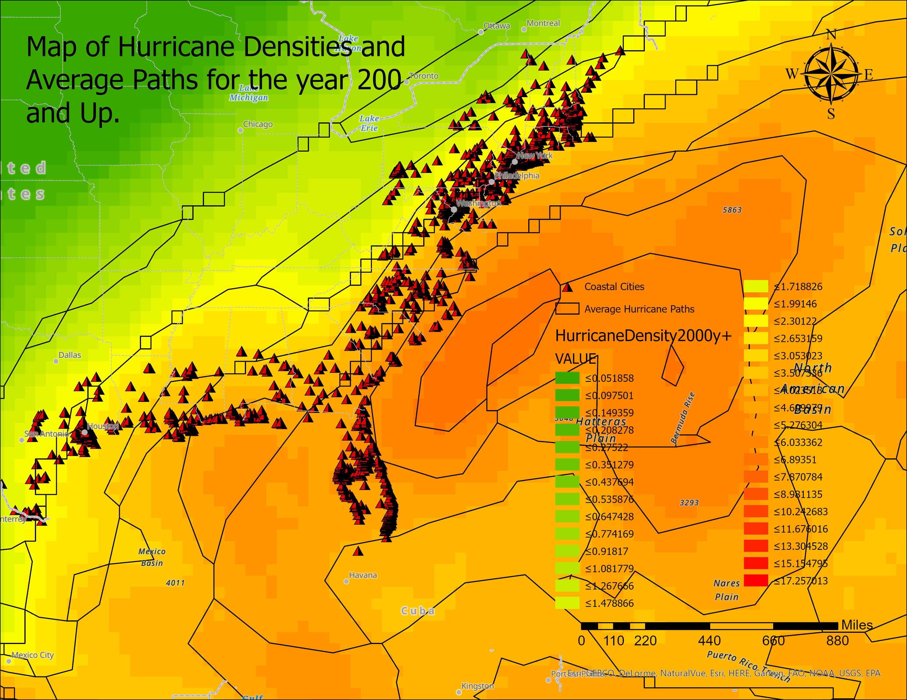
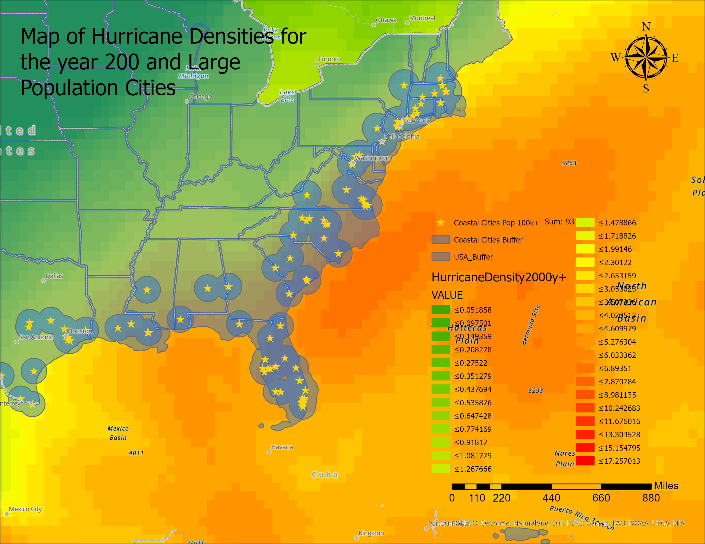
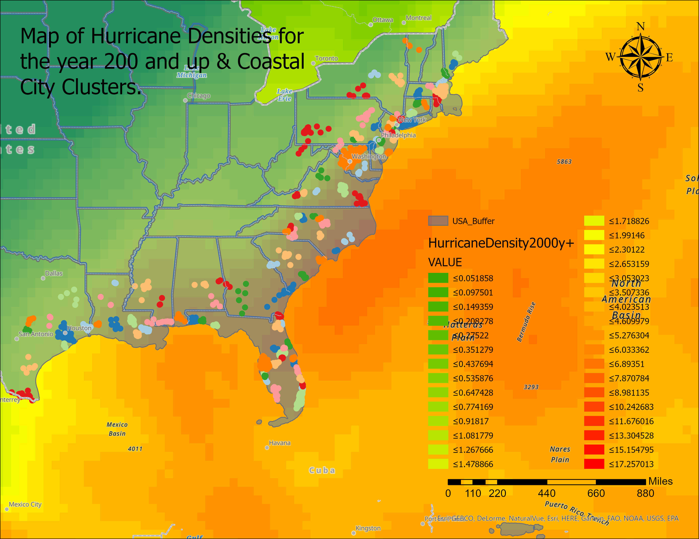
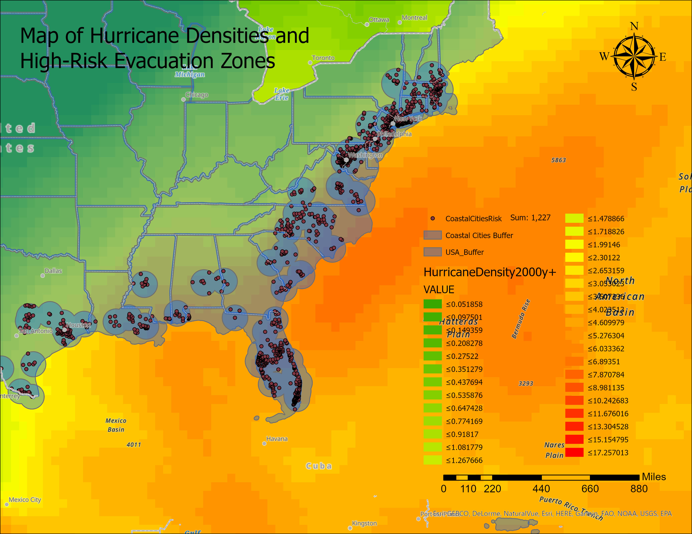
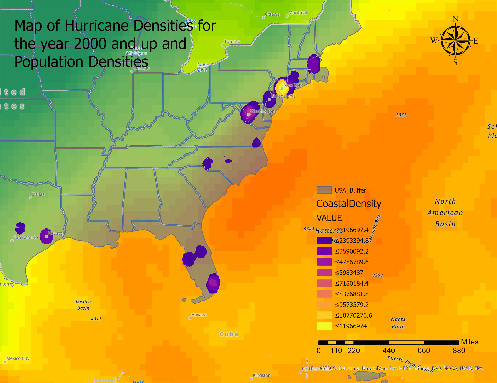

Mitchell Aitken, Julian Cramb, Jackson Cooper

For the purposes of the term project, our team had chosen to analyze the effect of hurricanes on the United States, and explore a variety of parameters in an effort to quantify its socio-economic effects. Our team believes that this topic is particularly timely, considering the ever growing concerns and damages caused by Global Warming.
Our team began with a variety of data, as seen in Task 1, as well as further described in Task 2, and began evaluating it in a variety of ways in-order to explore meaningful representations and visualizations. Following initial analysis, external articles and references were utilized to help further contextualize our team’s findings, which are described later on below (references seen below).
To begin, an area of study how to be defined. Our team had decided from the beginning to only focus on Hurricane effects on the United States, the East-Coast was further chosen to be the specific area of study. This area was chosen, since the waters of the Atlantic Ocean on the East-Coast are warmer than its counterpart on the West-Coast, and further proves to be an area of prime germination of tropical Storms and Hurricanes. The West-Coast can be further ruled out as Global Wind Patterns typically blow from East to West. With this information, a buffer of the United States was created and point data of US-based cities was added. Additionally, data of Storm Surge Watch locations (devices used to measure rising water level to provide advance notice of potential rising water levels typical with a Hurricane) was used. This data utilized resulted in 257 Storm Surge Watch locations and 3886 USA-based cities as seen in the map below.
Following the insertion of this data, further focalization was required to only focus on cities which are meaningfully impacted by these tropical Storms and Hurricanes. This was accomplished by creating a 150 Mile Buffer Surrounding the Storm Watch locations and intersecting cities within this zone. This resulted in the display of 1443 cities with a total analyzed population of 65433566 as seen below.
Once this had produced an area with cities most likely to be meaningfully affected by Hurricanes, the actual analysis of Hurricanes could begin. The Hurricane data in which we had utilized contained a variety of data associated with a particular hurricane, including its shapefile which showed its travel path (similar to as seen in Task 4). However, this datasource contained over two-hundred and eighty thousand tracked storms from the year 1840 and onward. With this amount of shapefiles, the analysis would have been extremely tedious. Therefore, we had chosen to represent the Hurricanes seen over time as a total Density, calculated from the Line Density function within ArcGis providing us with a raster file. This density of Hurricanes can be seen below.
The density of Hurricane paths as seen above, showcase the highest density of paths (in red) to the least dense paths of hurricanes (in green). From this produced raster, one can easily visualize, and make crude predictions for the potential, or most likely paths a hurricane would take. While this produced density is useful, it does not necessarily represent more recent developments in hurricane paths and effects. As such, the density of Hurricanes and Tropical Storms for the year two-thousand and up was taken. This once again produced a raster from least dense paths (in green) to most dense (in red). Additionally, multiple other densities were taken such as wind strength, and direction. These rasters were then combined into the average line paths and displayed. These lines display the most frequented paths of the hurricanes, and their localized intensities (seen through the squaring of lines). This can be seen below.
In-order to get a better sense of the potential populations affected, the cities with a population of over one-hundred thousand were queried and displayed. A buffer of fifty miles was created around the cities for future use. This resulted in ninety-three “large” cities being displayed as seen below.
Similarly, an understanding of potential clusters of affected cities was inquired into. This helped inform potential zones of effect, which was further utilized later. These clusters of cities were analyzed utilizing the ArcGis clustering-integrated tool resulting in separate city/town clusters with a typical cluster of roughly ten-fifteen included cities. These results can be seen below.
Text goes here for coastal cluster
Text goes here for high risk
Text goes here for pop density
Through all of our research and analysis of different maps, we have came to many conclusions.
A significant portion of the population along the eastern coastline of the United States has a high probability of experiencing a hurricane at some point. The density and intensity increases as you move southward, this is mainly due to the increased sea temperatures as you approach the equator. The cities that lie within the Gulf of Mexico are impacted less frequently as those that lie upon the outer coast, being due to the physical barrier of the peninsulas and islands. The peninsula of Florida being one of those barriers sees a large amount of hurricane activity due to its positioning.